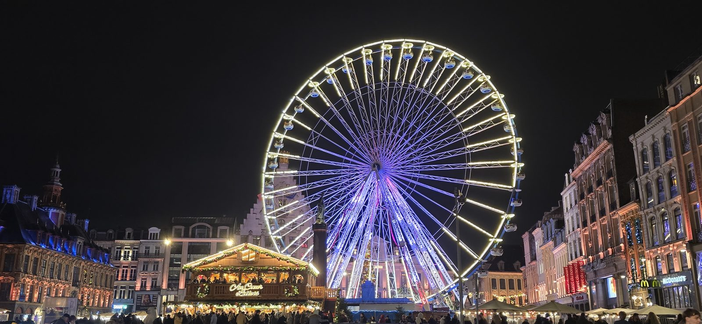
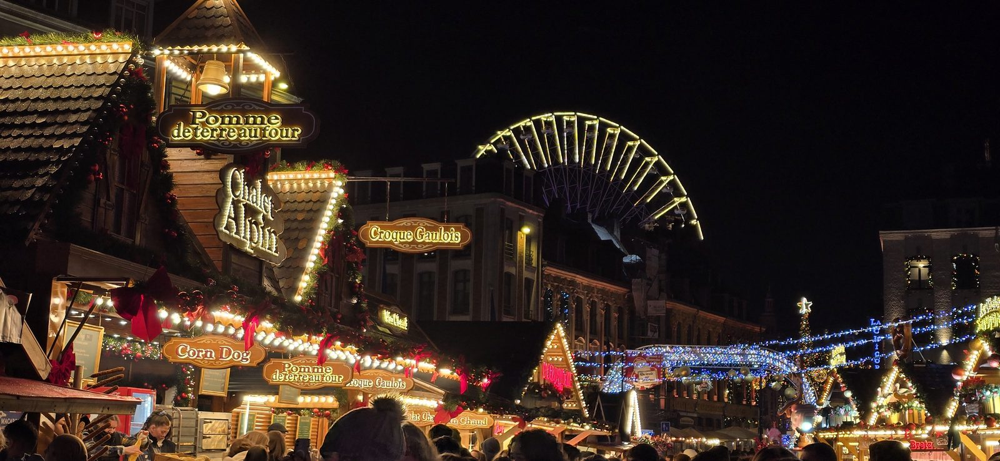

Lille's Christmas market: the complete guide
This is the busiest time of year in Lille, and not only with tourists. Locals go too, often more than once. The Christmas Village takes over Place Rihour for six weeks, the Ferris wheel goes up on the Grand'Place, and the whole centre switches to festive lighting.
Here's what you need to know to enjoy it without fighting the crowds.
At a glance
- Dates
- 18 November – 30 December 2026
- Hours
- Sunday to Thursday 11am–8.30pm · Friday and Saturday 11am–10pm
- Where
- Place Rihour (chalets) and Grand'Place (Ferris wheel)
- Metro
- Rihour, line 1
- Entry
- Free; some attractions charged
- Closing
- 24 December at 6pm; closed 25 December
- Ferris wheel
- 18 November 2026 to 16 January 2027
- Accessibility
- The market is wheelchair accessible
- Organiser
- Fédération lilloise du commerce, de l'artisanat et des services, with the City of Lille

Where it actually happens
Two places, two minutes apart on foot:
- Place Rihour is the Christmas Village itself, around ninety wooden chalets. The traders, the craftspeople and the food are all here.
- The Grand'Place is the Ferris wheel and the tree. The backdrop, not the market.
The two squares almost touch. Come out of Rihour metro station and you're at the foot of the chalets.
The Ferris wheel
Fifty metres high, thirty-six cabins. It has been part of the Lille skyline since the early 1990s. The view over the lit rooftops is worth the ticket, especially at dusk, when the lights below start to outshine the sky.
My advice: ride it on a weeknight. On a Saturday the queue can take forty minutes for a ride that lasts a few.
One thing few guides mention: the wheel stays up long after the market closes. The chalets come down on 30 December, the wheel keeps turning until 16 January 2027. In early January you'll have it almost to yourself. Same view, no crowd.
Hours: midday to midnight on weekdays, from 10am at weekends and during school holidays.
What's on the stalls
A mix of crafts and northern produce:
- Regional food: maroilles cheese, local beers, Flanders honey
- Decorations and wooden toys made by craftspeople from the Hauts-de-France
- Things to eat standing up: waffles, mulled wine, churros
As at any Christmas market, quality varies a lot from one chalet to the next. The local makers are easy to spot: they made what they're selling, and you can hear it when they talk about it.

When to go
This is the question that changes everything. The market is the same at any hour, but what you get out of it isn't.
- Best time: a Tuesday or Wednesday evening, around 6pm. It's dark, the lights are on, and you can actually move.
- Avoid: Saturday afternoon, especially the two weekends before Christmas. You shuffle down the aisles.
- Sunday morning works well with children. It's quiet, but it's daylight and you lose the lights.
Getting there
By metro, Rihour station puts you on the square. From Lille-Flandres station it's a five-minute walk down rue Faidherbe. You then arrive via the Grand'Place, past the Ferris wheel, which is the nicest way to turn up.
By car, forget the centre. Streets around the Grand'Place close at weekends and the underground car parks fill fast. Use a park-and-ride on the outskirts and take the metro: quicker and far cheaper.
To get into the market, skip the main queue. There's a side entrance on the left, opposite JD Sports. Go in that way and you save ten minutes for a few metres' walk.
What it costs
Getting into the village is free. Everything else you pay for: a few euros for a waffle or a mulled wine, and about €7 for a turn on the Ferris wheel, €5 for children under 1.40 m. No booking needed.
If you want more
The north has plenty of Christmas markets. Two are worth the trip from Lille:
- Roubaix: about fifty chalets around the town hall, leaning towards local designers. Twenty minutes by metro.
- Valenciennes: a medieval-themed village with street performances. Around forty minutes by train.